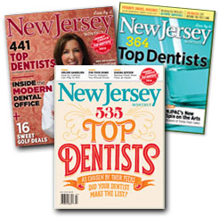

If you've come to our site looking for , dentists, periodontics, or oral medicine, please know that we take pride in serving , and our offices are conveniently located for you. We look forward to meeting you and keeping you smiling beautifully!
All of us extend a warm welcome to those visiting our web site. We want to share information about better oral health and beautiful smiles. We would like to be your source for news and facts.
Our goal is to give our patients the best care in a comfortable, relaxed atmosphere,
says Dr. Goteiner. He specializes in prevention, diagnosis, and treatment of periodontal disease and has advanced training in state-of-the-art dental implants and gum enhancement procedures. Among the most exciting new advancements in periodontics and dentistry is laser periodontics, or the use of lasers to treat your gums and gum disease. Dr. Goteiner specializes in laser periodontics and laser treatments.
Patients state that Dr. Goteiner and his experienced staff take care of their needs and concerns with understanding and compassion. Dr. Goteiner is a clinical professor at UMDNJ and a Fellow of the American and International Colleges of Dentists. He lectures throughout the country to fellow professionals. An accomplished painter, he has had shows in the tristate area.
If there is something you don't see here and need to know about, please write, call or e-mail us with your questions and concerns. We are here to serve you.
If you do choose this office, we will do everything we can to make you comfortable and provide the best care possible. We are committed to excellence in an atmosphere that is comfortable and relaxed.